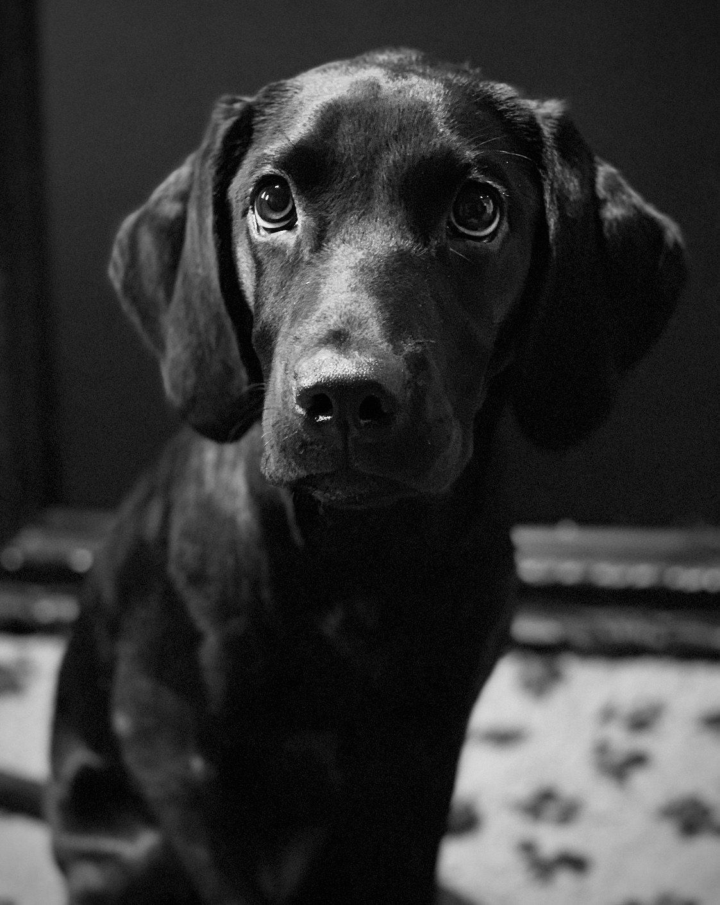
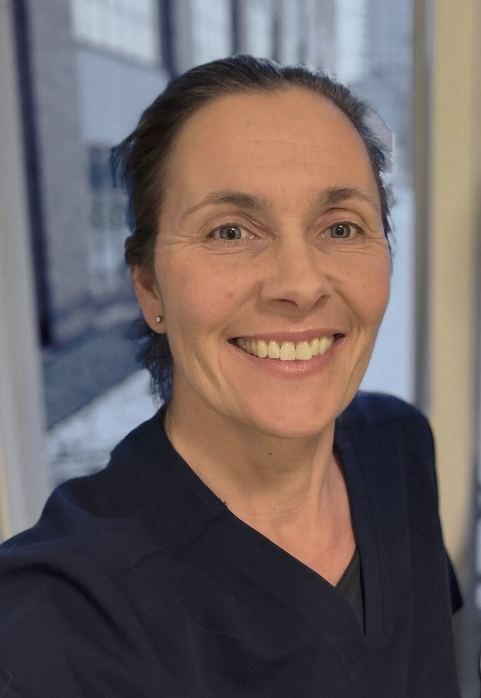
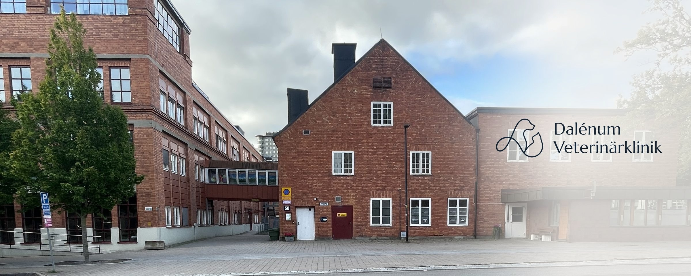

Veterinärklinik
Välkommen
En trygg plats för dig och ditt djur.
På Dalénum Veterinärklinik erbjuder vi omsorgsfull och professionell vård. Här möter du samma personal vid varje besök, vilket ger både dig och ditt djur en trygg och personlig upplevelse.
Öppettider
Måndag–Torsdag 08.00–17.00
Fredag 08.00–16.30
Adress
Agavägen 50
181 55 Lidingö
Våra tjänster
Vi finns här för ditt djur.
Hos oss kan ni få hjälp med de flesta typer av undersökningar och utredningar – för hund och katt.
- 01ÖgonsjukdomarBedömning och behandling – ett av våra särskilda fokusområden.
- 02HjärtutredningarHjärtultraljud (ekokardiografi) och HCM-screening.
- 03Diagnostik på platsEget laboratorium, ultraljud och digital röntgen.
- 04Förebyggande vårdHälso- och seniorkontroller, vaccination, ID-märkning.
- 05AkutvårdVi tar emot akuta fall – utan extra akutavgift.
Veterinärvård i privat regi
Veterinärvården så som vi minns den.
För oss är Dalénum Veterinärklinik drömmen om att återskapa veterinärvården så som vi minns den. Nära, personlig och med tid för varje patient och djurägare.
Vår ambition är att ge den bästa, individanpassade vården vi kan, genom att tillsammans med djurägaren fatta beslut för varje enskilt djurs bästa. Vi tror på närhet, lyhördhet och omtanke i varje möte, oavsett om det gäller en rutinkontroll eller en mer avancerad utredning.
Vår vision är att alla djurägare ska ha möjlighet att få veterinärmedicinsk hjälp till sina djur när de behöver det som mest. Med kärlek till djuren och vårt yrke vill vi skapa en trygg plats för både djur och deras ägare.
Vi hoppas att ni kommer att trivas lika bra hos oss som vi redan gör. Välkommen!
Christin & MichelleVeterinärer och klinikägare

Omdömen
Vad våra kunder säger.
Ett urval av omdömen som djurägare har lämnat om oss på Google.
-
Det var ett självklart val att följa Michelle till hennes nya veterinärklinik. Lokalen är superfin och fräsch, och framför allt känns det så tryggt. Rekommenderas varmt
cecilia DepaulisOmdöme på Google -
Besökte Dalénum Veterinärklinik idag med min hund. Vi blev så fint bemötta och veterinären var så omtänksam. Jag vill verkligen rekommendera kliniken.
Marianne JohanssonOmdöme på Google -
Fantastiskt, professionellt och omtänksamt bemötande både i receptionen och under själva veterinärundersökningen
Livia NilssonOmdöme på Google -
Vill verkligen rekommendera denna klinik. Så bra hantering av min hund, noggranna och dessutom prisvärda
Lisa Schibbye ÅströmOmdöme på Google
Källa: Google. Urval hämtat i oktober 2026 – visas oförändrat och uppdateras inte automatiskt.
Läs fler recensioner på Google ↗ (öppnas i ny flik)
Boka tid & kontakt
Välkommen till oss.
Besöksadress
Agavägen 50
181 55 Lidingö
Öppettider
- Mån–Tors08.00–17.00
- Fredag08.00–16.30
Akut sjukt djur? Ring oss innan du kommer till kliniken, så att vi kan ta emot er på bästa sätt och så snabbt som möjligt.